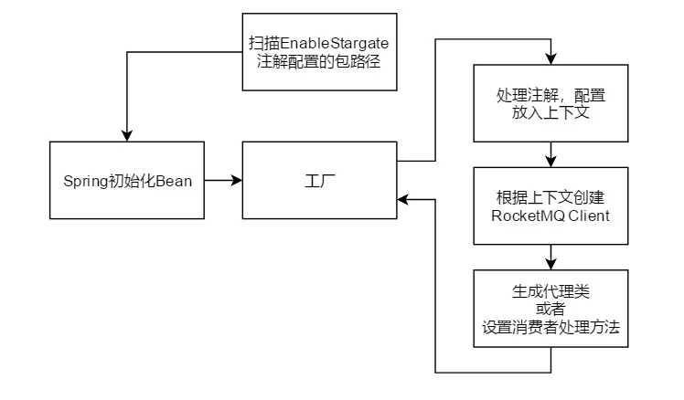

发布于
云片RocketMQ实战：Stargate的前世今生
云片由于其业务特点对应消息队列的使用十分频繁，这里以云片短信业务为例，短信业务的逻辑十分简单，我们只看主流程，本质就是接受用户请求，寻找合适的通道，使用cmpp/smpp协议提交给运营商。
我们可以发现，用户的每次请求要一直等待运营商的响应，这样主要的问题是：
- 云片的服务器再运营商返回时需要一直维护http连接
- 运营商的处理速率直接限制了云片的处理速率
- 云片的最大并发为所有供应商并发之和
这种情况下我们无法提供稳定的服务。
实际上对于用户来说并不关心具体流程他们只需将短信提交给云片即可，所以我们可以异步的处理这些发送过程，确认收到短信后就可以给用户返回结果以提高响应速度。
日常情况我们的系统流量会是一个比较平稳的值X，所以我们提供能满足的当前流量的消费能力，这样消息就不会积压。
不过随着流量的增加最终实践流量会超过我们的消费能力，这样就会出现短信送达延迟，图中虚线右边是我们不希望看到的。
所以我们在流量到达虚线前提高系统的消费能力。
### Stargate
我们可以看到云片对应消息队列的重度依赖，使得在微服务化的时候没有找到一个适合云片的好用的annotation组件，当时SpringCloud框架并没有对RocketMQ支持的相关组件，而RocketMQ官方github上仅有一个不成熟的项目。
对于目前重度依赖RocketMQ的短信业务我们需要一个简单易用并且能够与我们老项目中代码兼容的注解，同时还要满足各团队的不同需求，于是我们开始一个名为Stargate的组件来支持我们后续的服务化推进。
@StargateProducer
public interface TestProducter {
@StargateMapper("testaaa")
SendResult test(@StargateBody TestVO message);
}
@StargateConsumer
public class TestConsumer {
@StargateMapper("testaaa")
public void test(@StargateBody TestVO message){
//TODO
}
}
Stargate组件为什么出现？
事实上在有Stargate之前我们的项目中有一个对RocketMQ SDK的封装，它确实解决的许多问题，但是面对越来越多的生产者和消费者我们越来越难以维护，甚至于碰到不熟悉的代码我曾经花了半小时去找一个生产者的消费者在哪里，这个消费者被各种继承重写，生产者的topic是以一种极其复杂的规则生成的，而且各种配置文件散落在代码的各各角落。
然后旧的组件也十分难以迁移到新的微服务项目中，以至于有的业务线开始自己从新封装一套组件，而且他们生产者的消息难以被其他团队的消费。于是我希望做一套能够避免这些不良使用习惯的组件，并且提供强大的兼容性让大家迁移过来。
设计Stargate的目标是？
所以在设计Stargate的时候主要考虑以下几点：·
- 简单易用
注解的方式相比直接使用RocketMQ更加清晰，上手更快，更易用，避免各种不良写法。
- 扩展性强
SG1提供的扩展插件能够丰富Stargate的功能，而且这个插件的开发能力是开放的，后续会提到。实际上插件功能是在2.0增加应为我发现在限制大家的使用方式后，我需要定制许多的注解来兼容各种使用场景，于是我开放了这部分能力让大家选择性的开发和使用自己需要的功能。
- 兼容各种老项目
通过编解码器我们可以兼容各种不同的老项目，不需要修改老项目的代码。
- 单元测试更方便
另外再单元测试和开发阶段，无需对外部依赖可以方便的进行mock。
Stargate组件的价值
最初的时候我简单的认为这个组件的价值在于提供了一个更方便使用RocketMQ的方式，但后续的开发中慢慢的我发现并不是这样，目前来说我认为最有价值的两点在于：
- 服务间异步调用的“规范”
由于它的扩展性和兼容性被各各业务线团队采用，似乎成了一个“规范”，服务之间的通信多了一种可选项。我们可以把自己的StargateProducer接口定义放在一个jar包中提供给其他人
- “使用心得”的分享中心
插件的开发能力使得大家会把自己的使用模式封装成一个注解发布出来，这样许多十分巧妙的使用方法会被发布出来，而且这些都是开箱即用的，使用者只需要知道这个注解能实现什么，在发布要求上让开发者符上文档，这样就能形成一个生态，把大家的经验使用沉淀下来。
另外，Stargate对于代码结构方面的帮助也是巨大的，现在我们可以很快速的找到一个生产者的消费者在什么地方，后续甚至考虑提供IDE插件来更好的维护这些代码。
Stargate的实现
Stargate的初始化
那么我们接下来，看一下Stargate的这些设计目标是如何实现的，首先我们来看一下组件的入口，我们如何初始化Stargate的。
在应用启动时我们处理部分注解获得一个Bean的配置信息，然后向Spring注册这些Bean，我们为Producer生成代理类，创建Consumer客户端监听消息并且调用StargateConsumer处理这些消息。
| 生成这些的Bean的入口是从一个工厂类开始的，通常一个StargateProducer | StargateConsumer的创建会经过以下几个步骤： |

事实上Stargate并不负责初始化这些生产者消费者bean，Stargate仅仅提供了创建的过程，我们把这些bean注册到Spring中然后提供一个工厂方法，由spring在适当的时候创建这些bean，维护这些bean。
这样我们在spring中就有了这些生产者接口的实例，我们可以把他注入到任何地方然后使用它们发送消息。监听他的消费者就会调用事先配置好的StargateConsumer。
编解码器
每个发送者和消费者都会在收发消息前进行编解码，这也是兼容原有项目的关键。大家可以思考一下，所有项目的都是使用RocketMQ的，本质的直接调用SDK的Send方法就能发送消息，但是老项目对于如何将一个消息变成二进制数组这是不一样的，所以我们提供编解码器的接口让大家可以替换这些转换过程的实现。

扩展接口
但是消息的编解码只能实现兼容性但是对于扩展能力的需求无法满足，所以我们再初始化过程和发送消费过程中抽象出了6个接口，让用户可以扩展自己的逻辑。
这个些接口主要用于处理”注解解析“，”RocketMQ Client创建“，”消息加工“，我们可以从下图中看到，工厂在返回一个bean前会调用这些接口的实现。消息收发阶段也会调用相应的实现。
通常情况下我们实现一个新的注解@DemoModel有这么几个流程：
- 实现注解处理器处理注解数据
- 实现Client处理器，根据注解解析的数据加工Client
- 实现消息处理器，根据注解解析的数据加工消息

上下文
这时会有另一个问题，我们通常的流程在解析注解获得的数据需要保存给另外两个处理器使用，我们当然不希望让用户自己处理这些数据，这会增加用户的使用成本。
于是我们定义了一个上下文的概念，上下文有这几个特点：
- 每个生成消费者有自己的上下文
- 上下文是会被继承的
举一个例子，假如我们现在所有的生产者的topic加上一个公共前缀，那么我们只需要在生产者根上下文中的topic加上这个前缀的内容，所有的生产者都会有这个前缀。
事实上在Stargate2.0开始提供扩展功能后，我停止了对core项目的功能迭代，所有的新功能以插件方式在一个名为SG1的项目的发布，而每个用户也可以扩展自己的插件上传到SG1中，以此期望形成一个生态。
多环境多节点部署
另外在云片国际版YCloud上线之后我们又有一些新的挑战，YCloud主要服务海外客户我们的服务器并不在国内，但是我们的消息需要提交回国内节点消费，而且MQ都部署在国内，从香港节点到国内节点的延时让人无法接受，因为这个延时是用户能感知到的，所以我的目标是把这个延时交给消费者来承担。
如果简单的在部署一套集群或许实施起来是最快的，但是这样成本非常大，而且消费者1和消费者2的负载通常是不均衡的，如果有了第三的机房，难道每个消费者都要部署3套？
所以我们的方向是在香港节点部署一个broker，重写客户端的队列选择器，让生产者找出离自己最近的broker中的队列，而消费者消费所有队列。
其实这里对应消费者也是一样的，我们可以通过改变消费者的客户端负载均衡器来消费指定的队列，这样我们就能实现一个隔离的环境。
在后续的发展中我们将消费者使用同样的方式去指定消费指定的broker上的队列，于是就形成了图中这样的隔离的环境，这样做的好处是：
- 多个环境隔离正常消息不互通，达到隔离的目标
- 多个环境的broker仍然是一体的，如果一个消费者出现故障，另一个消费者可以代替
如果发现消费者1出现异常的话，可以临时让消费者2代替消费者1的工作保证功能正常，但是目前来说这部分功能仍然无法实现，应为我们需求有一个指挥中心告诉消费者2去消费环境1的消息。
未来规划
为了实现生产者消费者之间的协作，我们需要一个指挥中心，去收集和协调全部Stargate应用的工作。
StargateCommand会充当一个指挥中心，但是它只是一个协调机制，如果没有它Stargate应用仍然会按照其原型设定的方式去运行。